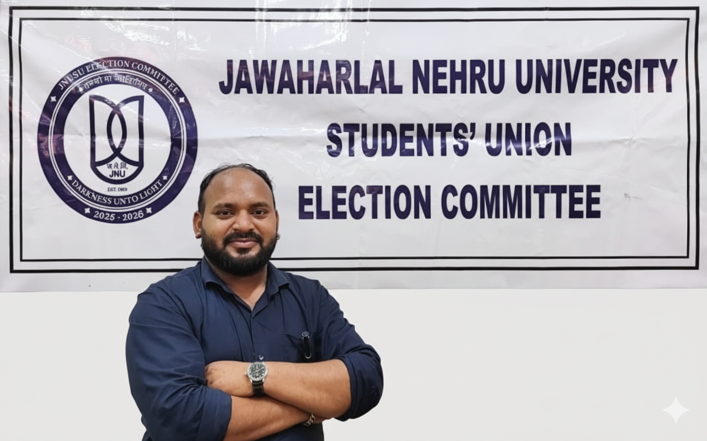

Latest Notices
Loading notices...
The JNUSU Election Committee is firmly committed to executing a fair, transparent, and orderly election for the entire student body.

Chair of Election Committee - Ravi Kant